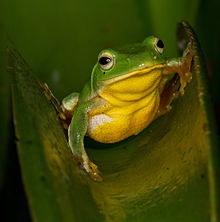

台北樹蛙

生活習性與出沒地點
生活習性
冬天為牠們的交配期，雄蛙會到泥濘處或水池邊挖洞， 並以蛙鳴吸引雌蛙，不過有時也有「雄蛙撿現成」的情形發生。
出沒地點
通常出現在台灣中部以北、海拔約1500公尺以下的丘陵地， 但主要分布在台北盆地。 一般會在水池、溝渠等靜水區出現。 儘管族群數量穩定，但是由於人類的土地開發， 使得牠們仍受到棲息地喪失的威脅。
覓食
台北樹蛙為肉食性，主要以昆蟲或蟻類為食。
身體特徵
背部呈翠綠色，腹部則為黃色，能夠隨環境改變自身顏色。 通常雌蛙會比雄蛙的體長稍長一些。
回首頁